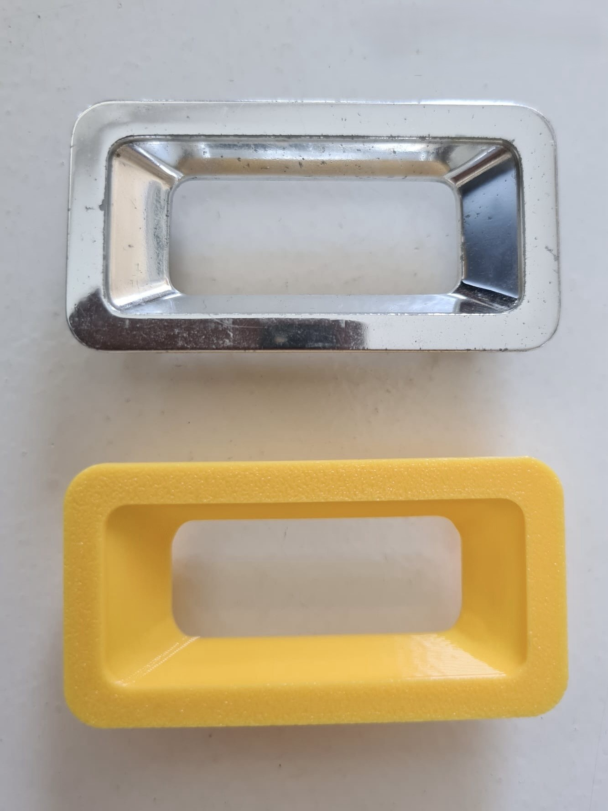
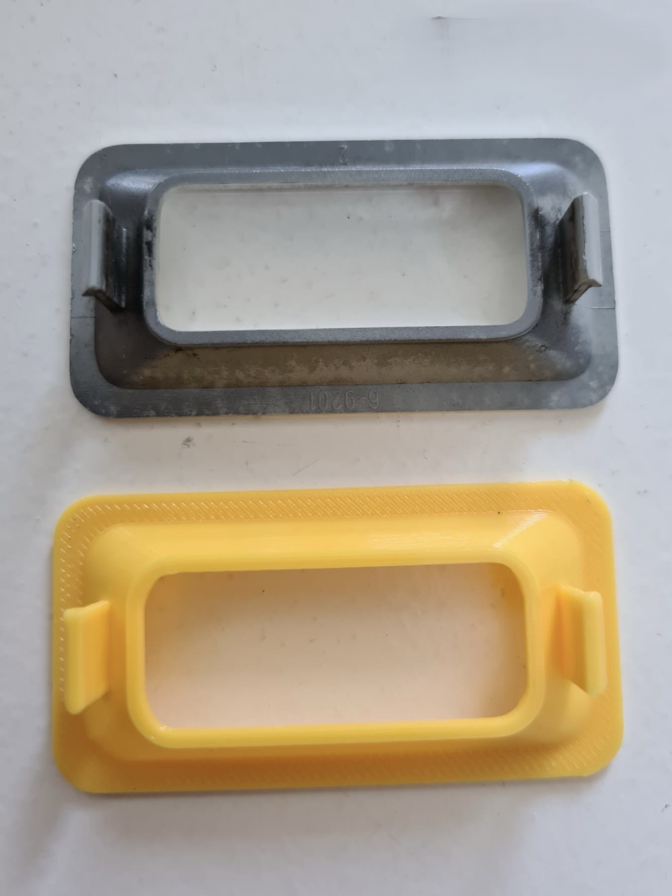
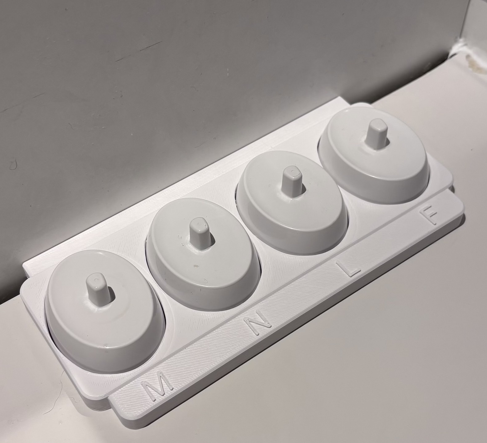
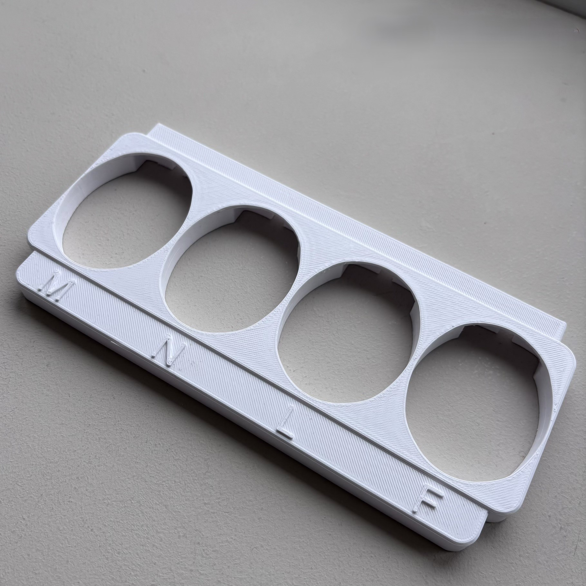
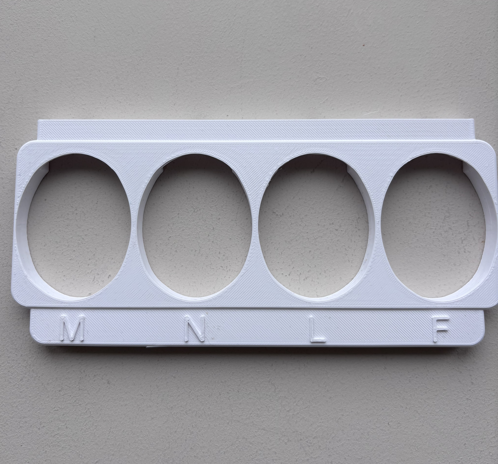
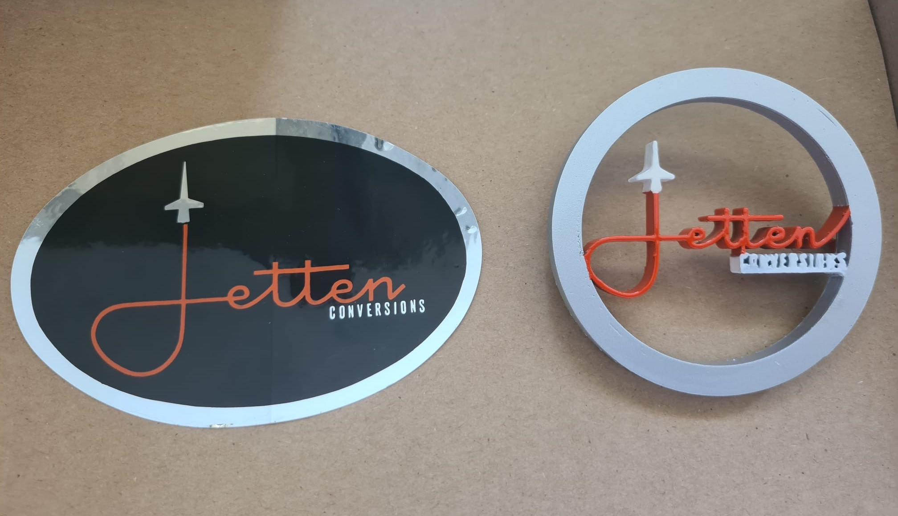
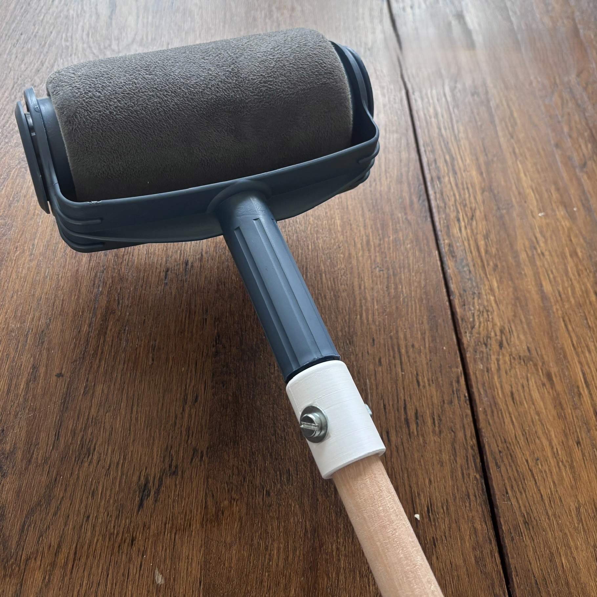
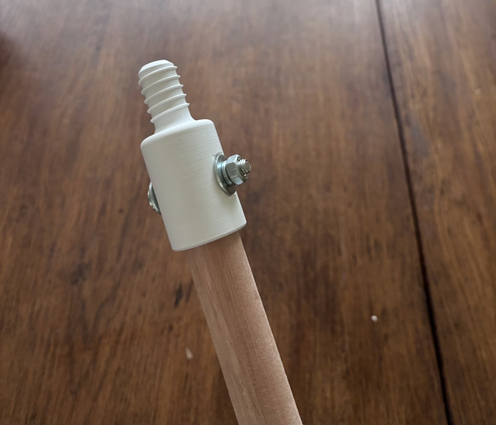

3D-printen
Het maken van fysieke onderdelen, prototypes en testmodellen met 3D-printtechniek.
CustomParts3D helpt met het ontwerpen en maken van technische onderdelen, prototypes en maatwerkoplossingen. Van een eerste idee tot een fysiek product.

CustomParts3D richt zich op het ontwerpen, verbeteren en 3D-printen van maatwerk onderdelen en praktische oplossingen.
Het maken van fysieke onderdelen, prototypes en testmodellen met 3D-printtechniek.
Onderdelen ontwerpen en produceren die niet meer verkrijgbaar zijn of specifiek aangepast moeten worden.
Bestaande onderdelen namaken, verbeteren of aanpassen zodat ze weer bruikbaar worden.
Hieronder staan eerste voorbeelden van maatwerk onderdelen en 3D-geprinte oplossingen.

Voor een Opel Manta is een onderdeel voor in het portier nagemaakt. Het originele metalen onderdeel is gebruikt als referentie en daarna vertaald naar een 3D-geprint kunststof onderdeel.



Deze houder is ontworpen voor bestaande elektrische tandenborstel-opladers. De opladers kunnen netjes geplaatst worden, waardoor de badkamer overzichtelijker blijft.

Een bestaand stickerontwerp is omgezet naar een fysiek 3D-geprint embleem. Hierdoor krijgt het logo meer diepte en een professionelere uitstraling.


Voor een bezemsteel is een vervangend onderdeel ontworpen en 3D-geprint, omdat het originele onderdeel kwijt was. Hierdoor kon het product opnieuw gebruikt worden.
Mijn naam is Luuk Reurslag. Vanuit mijn achtergrond in werktuigbouwkunde ben ik geïnteresseerd in productontwerp, 3D-printen en praktische technische oplossingen.
Met CustomParts3D wil ik maatwerk onderdelen, prototypes en verbeterde producten maken voor mensen die een specifieke oplossing nodig hebben. Ik werk graag vanuit een concreet probleem en vertaal dat naar een maakbaar ontwerp.
Vul het formulier in of mail direct naar customparts3d@outlook.com. Dan kan ik met je meedenken over de mogelijkheden.
Wil je foto’s of voorbeeldbestanden meesturen? Stuur deze dan apart in een extra mail naar customparts3d@outlook.com. Dat is vaak handig bij maatwerk onderdelen, omdat een foto het probleem of onderdeel duidelijker kan maken.